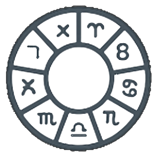

Consultation
At the moment of your birth, the sky drew a map — a unique alignment that holds the essence of who you are. We study this cosmic imprint, carefully interpreting your natal chart to reveal your strengths, energies, and hidden patterns.
Consultation with psychologist
The beginning of your path is a sincere conversation with a professional psychologist.
Consultation with Tarot
The following is a consultation with the tarologist.

Natal chart analysis
The final consulting stage is an astrological analysis.
Making a bracelet
We select the perfect materials for you...

Delivery
We use any convenient services to you...
Finish
Your personal bracelet is complete.